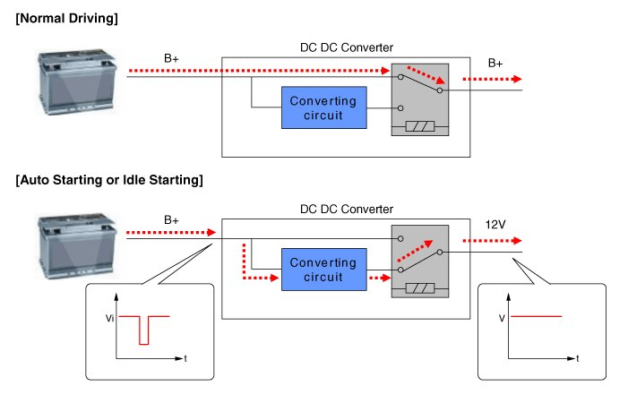

DC/DC Converter
Description
Due to the considerably more frequent occurrence of starting operations, the electrical load that occurs often leads to voltage dips in the vehicle network.
In order to stabilize the power supply for certain voltage-sensitive electrical components, a DC/DC converter is used in conjunction with the ISG function.
The DC DC converter supplies the relay with a voltage that also remains constant during the starting operation.
The DC/DC converter is fitted at the behind of the glove box.
Via the test leads for input voltage and the start relay , the electronics decide whether the power is supplied to the output via the bypass or the DC/DC converter.
In the bypass mode, the on-board supply voltage is not fed across the DC/DC converter, rather is transferred directly to the outputs. In the booster phase, the vehicle voltage is adapted.
Operation Principle

CAUTION:
- In the ISG mode, if the power of an audio system turns OFF by drawdown while "Auto Starting" or "Idle Starting" function operates, replace the DC/DC converter.